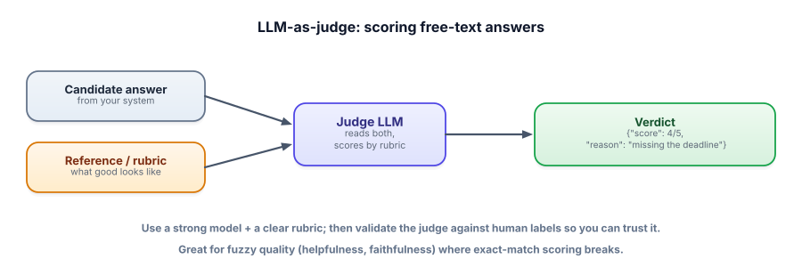

LLM-as-judge
How do you score “is this answer helpful, faithful, and well-written?” at scale, when there’s no single right string? You use a model to grade the output. It’s the workhorse of modern evals — powerful, scalable, and full of pitfalls you must know about.
Why we need a model to grade models
Exact-match and keyword checks work for closed outputs, but most LLM outputs are open-ended: a summary, an explanation, a support reply. There are countless valid wordings, so string matching either falsely fails good answers or lets bad ones through. Humans can judge quality, but they don’t scale to thousands of outputs on every change. The pragmatic answer is LLM-as-judge: prompt a capable model to score an output against a rubric (and often a reference answer), returning a structured verdict you can aggregate.

LLM-as-judge uses a model to evaluate outputs. A rubric is the explicit criteria it scores against (“correct? complete? grounded? concise?”). Reference-based judging compares the answer to a known-good answer; reference-free judging scores against the rubric alone. Pointwise judging scores one answer; pairwise judging picks the better of two (often more reliable). Because the judge is itself an LLM, you must validate it against human labels before trusting it.
An LLM judge is like a talent-show judge marking singers. A fair judge follows a scorecard. A tired judge starts liking whoever sang first, gives extra points to whoever sang longest, and quietly favours singers from their own music school. You check a judge by having them mark a few performances that expert judges already scored, and seeing how often they agree. Where it breaks: a human judge can explain a bias when asked, but an LLM judge's written reason may sound fair even when its score is biased, so you must measure, not ask.
Judge an answer yourself
Question: “What’s the refund window?” Reference: “30 days from delivery.” Pick a candidate answer and see how a rubric-based judge scores it — and where judge biases creep in.
LLM-as-judge
Force a structured verdict so you can aggregate scores across your golden set. A clear rubric is the whole game.
import json, ollama
def judge(question, reference, answer):
prompt = f"""You are a strict grader. Score the ANSWER from 1-5 for correctness
and completeness vs the REFERENCE. Penalize wrong facts heavily; ignore style/length.
Return JSON: {{"score": <1-5>, "reason": "<one sentence>"}}.
QUESTION: {question}
REFERENCE: {reference}
ANSWER: {answer}"""
out = ollama.chat(model="llama3.2",
messages=[{"role":"user","content":prompt}], format="json")["message"]["content"]
return json.loads(out)
v = judge("What's the refund window?", "30 days from delivery",
"Refunds are available within 14 days.")
print(v) # {"score": 1, "reason": "States 14 days; reference says 30 — factually wrong."}Run the judge over every golden-set case and average the scores — now you have a quality metric for open-ended outputs that you can track release over release.
Assumptions: an insurer's claims assistant has a 2,000-case eval. A pairwise judge compares the current prompt (A) with a candidate (B) every night. Judge model: claude-sonnet-5-5 at $2 in / $10 out per million tokens (Claude models overview).
- Position-bias control. Run each pair twice, A-then-B and B-then-A. Count a win only if both orders agree; otherwise call it a tie. This is the mitigation from Zheng et al. 2023, arXiv 2306.05685, where GPT-4 as judge gave the same verdict after a swap only 65% of the time and Claude-v1 only 23.8%.
- Cost. 2,000 pairs x 2 orders = 4,000 calls. At about 1,500 input and 150 output tokens each: 6.0 M input x $2 = $12, plus 0.6 M output x $10 = $6. Total $18 a night, or $9 through the Batch API at 50% off.
- Calibrate against humans. Two reviewers label 400 sampled answers pass or fail. Compare with the judge: both pass 270, both fail 60, human pass but judge fail 30, human fail but judge pass 40.
- Raw agreement. (270 + 60) / 400 = 0.825. Looks good.
- Chance-corrected agreement. Humans pass 300/400 = 0.75; judge passes 310/400 = 0.775. Expected agreement by chance p_e = 0.75 x 0.775 + 0.25 x 0.225 = 0.6375. Cohen's kappa = (0.825 - 0.6375) / (1 - 0.6375) = 0.52. Moderate, not strong.
- Read the off-diagonal. The 40 cases the judge passed but humans failed are the dangerous ones. If most are long, confident but wrong answers, that is verbosity bias: add "length earns no credit" plus a reference answer, then re-measure.
- Pin it. Freeze the judge model ID and a hash of the judge prompt. Any change to either reruns this 400-case calibration before scores are compared with old ones. That stops rubric drift from looking like a quality change.
LLM judges have well-documented biases: verbosity bias (preferring longer answers), position bias (favoring the first option in pairwise), self-preference (a model rating its own family’s outputs higher), and leniency. Mitigate by: a clear rubric that says what to ignore (style/length), swapping positions in pairwise comparisons, using a different model family as judge, and — most importantly — validating the judge against human labels so you know its scores correlate with reality.
- LLM-as-judge scores open-ended outputs where exact-match fails — at human-like quality, at scale.
- Give it a clear rubric (and a reference when you have one); force a structured verdict to aggregate.
- Pairwise (“which is better?”) is often more reliable than absolute scoring.
- Judges have biases (verbosity, position, self-preference) — mitigate, and validate against humans.
- Use code metrics for closed outputs, the judge for fuzzy quality — match the tool to the output.
Your LLM-judge consistently rates longer, more elaborate answers higher — even when a short answer is fully correct. What’s happening and how do you fix it?
Your LLM judge agrees with humans 75% of the time. What should you check before trusting it?
You swap the order of answers A and B in a pairwise judge prompt and 30% of verdicts flip. What does that tell you, and what do you do?
Your generator and your judge are the same model. The judge rates the system's answers higher than humans do. Which bias is most likely?
Last month the judge scored v1 at 4.1/5. This month, after someone edited the judge prompt, it scores v1 at 3.6. What is the right conclusion?
1. Write a 3-criterion rubric for judging a RAG answer (hint: think faithfulness, relevance, and one more).
2. Why might pairwise judging (“is A or B better?”) be more reliable than scoring each 1–5?
3. Before trusting your judge in CI, what one validation step is essential?
▸ Show solutions & reasoning
1. e.g.: Faithfulness — every claim is supported by the retrieved context (no invented facts); Relevance — the answer actually addresses the question; Completeness/clarity — it covers the key points and is understandable. (Citations could be a fourth.) A good rubric is specific enough that two judges would agree.
2. Because picking the better of two is an easier, more grounded task than assigning an absolute number — “4 vs 5” is fuzzy and drifts, but “A is more correct than B” is a concrete comparison. Pairwise tends to be more consistent and is great for comparing two prompt/model versions head-to-head (just remember to swap positions to cancel position bias).
3. Validate the judge against human labels: have humans score a sample, then check the judge’s scores correlate with theirs. If they don’t, your “metric” is noise and any decision based on it is unreliable. A judge you haven’t validated is a vibe with extra steps — confirm it tracks human judgment before you let it gate releases.
LLM-as-judge is indispensable but not infallible, so calibrate how much weight you put on it. It’s most trustworthy for relative comparisons (did v2 beat v1?) and for coarse quality bands (clearly-good vs clearly-bad), and least trustworthy for fine absolute scores (is this a 4 or a 5?) or for domains needing real expertise (medical, legal correctness) where the judge may be as wrong as the system. The professional pattern is a hierarchy: use cheap code checks where you can (exact fields, format, regexes), use the LLM judge for fuzzy quality, and keep a human in the loop for a sample — especially for high-stakes decisions and for periodically re-validating the judge.
A subtle risk worth naming: the judge and the system can share blind spots. If your generator and your judge are the same model family, the judge may rate confident hallucinations highly because it would make the same mistake — which is why using a different, ideally stronger, model as judge helps, and why human spot-checks remain essential. Treat the judge as a fast, scalable approximation of human judgment that you continuously verify, not as ground truth. Done this way, LLM-as-judge lets a small team measure quality across thousands of cases on every change — the capability that makes the eval flywheel actually spin.
labs/06_evals.pyFree and offline once set up: Ollama with qwen2.5:7b, plus the packages in labs/README.md. From the course folder:
python labs/06_evals.pyWhat to look for: Find the position-bias test: it asks the judge the same A/B question in both orders and counts verdict flips. A high flip count means the judge is reacting to order, not quality. Change the judge prompt (add a rubric line or a reference answer) and rerun to see whether flips drop; note that qwen2.5:7b is a small judge, so expect more bias than a frontier model shows.
▸ Recorded output (our run, 2026-11-03, qwen2.5:7b on a laptop GPU)
against human labels before you trust it (report agreement and Cohen's kappa, not vibes).
5) Judge position bias: same pair, swapped order
How long do card refunds take? order1 picked B, order2 picked B -> FLIPPED
Return window for electronics? order1 picked B, order2 picked A -> consistent
Express shipping price? order1 picked B, order2 picked A -> consistent
When is standard shipping free? order1 picked A, order2 picked B -> consistent
Duplicate charge reversal time? order1 picked A, order2 picked B -> consistent
consistent verdicts: 4/5 correct in both orders: 2/5
Look: with no reference passage in the judge prompt, the judge has to guess which number is right.
Always judge both orders and count a win only when both agree; give the judge the reference.
6) How wide is the error bar on 12 cases?
v1 accuracy 92%, 95% normal-approx interval +/- 16% (n=12)
At n=400 the same accuracy would be roughly +/- 2.7%
{"v1_correct": 0.917, "regressions": 12, "judge_consistent": 4}Your numbers will differ a little run to run. Full log: labs/outputs. Source: labs/06_evals.py.
Warm-up. A judge and a human label 200 answers. Both pass 120, both fail 40, human pass / judge fail 15, human fail / judge pass 25. Compute raw agreement and Cohen's kappa.
▸ Solution
Raw agreement p_o = (120 + 40) / 200 = 0.80. Human pass rate = (120 + 15) / 200 = 0.675; judge pass rate = (120 + 25) / 200 = 0.725. Chance agreement p_e = 0.675 x 0.725 + 0.325 x 0.275 = 0.489 + 0.089 = 0.579. Kappa = (0.80 - 0.579) / (1 - 0.579) = 0.221 / 0.421 = 0.52. You can confirm with sklearn.metrics.cohen_kappa_score. Note that the 25 human-fail / judge-pass cases are the ones to read first: they are where the judge would let bad answers ship.
Transfer. Your judge scores support replies 1-5. Humans say the judge rewards polite but vague answers. Rewrite the setup to fix it.
▸ Solution
1) Move from one holistic 1-5 score to separate binary checks: answers the actual question (y/n), every factual claim supported by the reference or context (y/n), gives the next action (y/n). Binary checks drift less than a 5-point scale. 2) Add explicit 'do not reward' lines: politeness, length and apologies earn no credit. 3) Supply the reference answer so the judge compares facts, not tone. 4) Ask for the reason before the verdict in a fixed JSON schema. 5) Recalibrate on the same human-labelled sample and compare kappa before and after. Ship the new judge only if agreement went up.
Stretch. Design a judge-validation protocol that a team must pass before an LLM judge can block merges in CI.
▸ Solution
Calibration set: 300-500 cases sampled across categories and across known-good and known-bad outputs, each labelled by two humans; drop or fix cases where humans disagree. Metrics: Cohen's kappa against the human consensus (set a bar, for example 0.6 or higher, agreed with the team), plus the false-pass rate on critical cases, which should be near zero. Bias tests: swap order on pairwise prompts and measure flip rate; pad correct answers with filler and check scores do not rise; score outputs from the judge's own family versus another family and compare. Versioning: judge model ID and prompt hash stored with every score; any change triggers a rerun of the whole protocol. Monitoring: every month, humans relabel 50 fresh production cases and kappa is recomputed, so drift in the inputs is caught as well.
Junior What is LLM-as-a-judge and what are its main pitfalls?
▸ Model answer
It means using a model to grade another model's output against a rubric, sometimes with a reference answer, returning a structured verdict you can aggregate. It scales open-ended evaluation far beyond what humans can review. The known pitfalls are position bias (preferring the first or second answer in a pair), verbosity bias (preferring longer answers), self-preference (rating its own family's outputs higher) and weak reasoning on maths or specialist facts. Mitigations: swap order and require agreement, tell the rubric to ignore length, use a different model family, give a reference answer, and check the judge against human labels before trusting it.
Mid Your judge agrees with humans 85% of the time. Is that good enough to gate releases?
▸ Model answer
Not by itself. Raw agreement ignores chance: if 80% of answers pass, two raters who both say 'pass' most of the time agree a lot by accident. I would compute Cohen's kappa, which corrects for that, and look at the confusion matrix, especially cases where the judge passes what humans fail, since those are bad releases getting through. I would also check that agreement holds per category, not only overall, and that the calibration set reflects current traffic. If kappa is solid and false passes on critical cases are near zero, I would gate on it, with periodic human relabelling to catch drift.
Senior How would you design an evaluation system that relies on LLM judges but stays trustworthy as models and prompts change every month?
▸ Model answer
Treat the judge as a versioned measuring instrument. Pin judge model ID and prompt hash with every score and never compare scores across judge versions; rescore baselines instead. Keep a human-labelled calibration set and require a kappa threshold and a near-zero critical false-pass rate before a new judge version is adopted. Prefer narrow binary checks over holistic scores, use pairwise with order swapping for A/B decisions, and use a judge from a different family than the generator, or a small panel of judges, to cut self-preference. Cheap code checks run first so the judge only handles what needs judgement. Finally, sample production monthly for fresh human labels, because the inputs drift even when the judge does not.
- Judging LLM-as-a-Judge with MT-Bench and Chatbot Arena - Zheng et al., arXiv 2306.05685
- Large Language Models are not Fair Evaluators - Wang et al., arXiv 2305.17926
- Replacing Judges with Juries: Evaluating LLM Generations with a Panel of Diverse Models - Verga et al., arXiv 2404.18796
- sklearn.metrics.cohen_kappa_score - scikit-learn documentation
You can now score quality offline. But the truest signal comes from real users. Next we contrast measuring before vs. after you ship. Next: offline vs online evals.